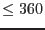
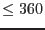
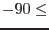
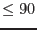
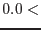
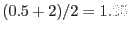

| Parameter | Mand | Type | Default | Constraints |
| filemode | no | string | modify | modify|create |
Controls whether the task opens a previous source list for editing or creates a new one.
|
| changeprime | no | boolean | no | yes|no |
Only active in filemode=`modify'. Unless this parameter is set, the previous prime source index number is retained.
|
| changeattitude | no | boolean | no | yes|no |
Only active in filemode=`modify'. Unless this parameter is set, the previous attitude (stored in the header) is retained.
|
| srclist | yes | dataset | rgsset.ds | |
The name of the rgs source list. If filemode=`create', the output is written to this file. If there is an existing file of this name, it will be overwritten unless SAS_CLOBBER is unset. If filemode=`modify', the task looks for an existing source list of this name and modifies it.
|
| instexpid | no | string | | |
This parameter contains information about both the instrument (that is, RGS1 or 2) and the exposure identifier (a letter S or U, indicating scheduled or unscheduled, followed by a three-digit numeric identifier. The instexpid string can be supplied in a number of different forms, but the two most useful are (i) as a six-character string comprising either R1 or R2 followed by the exposure identifier (an example: `R2S003'); (ii) the name of any of RGS-specific files in the ODF can also be used. This parameter is mandatory if filemode=`create', or in cases where the instrument and/or exposure can neither be read from the file header or deduced from its name.
|
| writeobskwds | no | boolean | yes | yes|no |
If this is set, the task attempts to write observation-specific keywords to the file header. The user must point the environment variable SAS_ODF to the ODF directory for this to succeed.
|
| writeexpkwds | no | boolean | yes | yes|no |
If this is set, the task attempts to write exposure-specific keywords to the file header. For this to succeed, the user must point the environment variable SAS_ODF to the ODF directory, and the task must also be able to determine the exposure number, either via the instexpid parameter, or from the EXPIDSTR keyword in the file header, or (if neither are present) from the file name.
|
| clobberonlabel | no | boolean | no | yes|no |
Labels in RGS source lists are required to be unique. Where a clash is detected between a source already in the list and a new candidate source, the task takes one of two actions, depending on the value of this parameter: if `yes', the candidate is discarded; if `no', the task halts with an error.
|
| primestyle | no | string | label | label|index|expr|brightest|auto |
Only active if changeprime=yes and either addusersource or userasprime=no. It controls the way in which the prime source is specified. See the parameters primelabel and primeindex. (An additional possible value of `expression' is planned.)
|
| primelabel | no | string | PROPOSAL | |
If primestyle is active and set to `label', this parameter gives the value of the LABEL column of the source that it is desired the PRIMESRC keyword should point to.
|
| primeindex | no | integer | 1 |  primeindex primeindex |
If primestyle is active and set to `index', the PRIMESRC keyword is set to this value.
|
| primeexpression | no | string | | |
This mode is not yet supported.
|
| attstyle | no | string | expmedian | mean|median|start|user|expmedian |
Controls the way the attitude is calculated. If `mean', the attitude is calculated from the mean of the values in the attitude history file. If `median', the median of these values is used. If the value is `start', the task uses the attitude at the start of the exposure as the reference attitude. A value of `expmedian' tells the task to use the median of the attitude during the exposure only, as calculated by attfilter. The final value, `user', allows the user to input the numbers him/herself via the next three parameters.
|
| meanset | no | dataset | atthk.dat | |
The name of the attitude history file. This file is a necessary input in the case that attstyle is `mean'.
|
| medianset | no | dataset | atthk.dat | |
The name of the attitude history file. This file is a necessary input in the case that attstyle is `median'.
|
| attra | yes | angle | |  attra attra |
Only active if attstyle=`user'. The right ascension of the attitude, in decimal degrees.
|
| attdec | yes | angle | | attdec |
Only active if attstyle=`user'. The declination of the attitude, in decimal degrees.
|
| attapos | yes | angle | | attapos |
Only active if attstyle=`user'. The position angle of the attitude, in decimal degrees.
|
| expmediantable | no | table | attgti.ds:STDGTI | |
The name of the table in the filtered attitude history file in which the exposure-median keywords can be found. This file is a necessary input in the case that attstyle is `expmedian'.
|
| addusersource | no | boolean | no | yes|no |
This should be set if the user wishes to add a source to the list with a position specified on the command line.
|
| label | no | string | USER | |
Only active if addusersource=yes. This is written directly to the LABEL column of the output source list. The empty string is not permitted.
|
| rate | no | real | 0.0 | rate |
Only active if addusersource=yes. The brightness of the source in counts per second. It is anticipated that this parameter won't be used much, since this is not a quantity that is likely to be known in most circumstances. The default value of 0.0 is harmless.
|
| userasprime | no | boolean | no | yes|no |
Only active if addusersource=yes. If changeprime=yes and userasprime=yes, then the attribute PRIMESRC is set to the index number of the user source.
|
| process | no | boolean | no | yes|no |
Only active if addusersource=yes. This causes the value in the PROCESS column to be set to true for the user-added source.
|
| bkgexclude | no | boolean | yes | yes|no |
Only active if addusersource=yes. This causes the value in the BKG_EXCLUDE column to be set to true for the user-added source.
|
| positionstyle | no | string | radec | radec|wrtatt |
Only active if addusersource=yes. If positionstyle=`radec', then the position of the user-added source is expected via the parameters ra and dec. If on the other hand positionstyle=`wrtatt' (With Respect To ATTitude), then the position of the user-added source is expected via the parameters deltadisp and deltaxdsp.
|
| ra | yes | angle | | ra |
Only active if addusersource=yes and positionstyle=`radec'. The right ascension of the user-added source, in decimal degrees.
|
| dec | yes | angle | | dec |
Only active if addusersource=yes and positionstyle=`radec'. The declination of the user-added source, in decimal degrees.
|
| deltaxdsp | yes | real | 0.0 | |
Only active if addusersource=yes and positionstyle=`wrtatt'. The displacement in arcminutes of the user-added source from the pointing direction, in the dispersion direction.
|
| deltadisp | yes | real | 0.0 | |
Only active if addusersource=yes and positionstyle=`wrtatt'. The displacement in arcminutes of the user-added source from the pointing direction, in the cross-dispersion direction.
|
| withepicset | no | boolean | no | yes|no |
If this is set, the task looks for the parameter epicset, giving the name of an EPIC source list.
|
| epicset | no | dataset | | |
The name of a set containing a list of sources. Formats output by the tasks emldetect
and eboxdetect
are accepted.
|
| epiclabelprefix | no | string | EPIC | |
This parameter gives the string which is used by the task as a prefix when constructing LABEL values for EPIC-derived sources. The other part of the LABEL is the number ML_ID_SRC or BOX_ID_SRC. The main purpose of this parameter is to allow several EPIC-derived source lists to be included in the one RGS list if desired, while retaining unique labels.
|
| doconfusion | no | boolean | no | yes|no |
Active only if withepicset=true. This parameter causes the task to check the epic sources + proposal position for confusion in the EPIC field of view. It is mainly designed for use in the PCMS, to prevent automatic extraction of too many spectra for what is essentially the same object. The degree of confusion depends on the size of the PSF, which is a function of energy. Therefore, strictly speaking, it depends on the selection of the energy band of interest (bandids). At the moment, however, the a-priori energy of
 keV is unconditionally used for it, whatever bandids is.
|
| instweights | no | real list | 3.5,1.0,1.0 | |
Active only if withepicset=true. This parameter gives the list of weighting factors for EPIC instruments for the use of calculation of RATE, where the order is the normal ID_INST number (i.e., pn, MOS1 and 2). The resultant RATE in the output RGS source list is normalised to 1.0 in the list, namely in default, it is normalised to the RATE of MOS1 (or 2).
|
| flagepicsrcoutoffov | no | boolean | no | yes|no |
Active only if withepicset. If this is set, the input EPIC sources falling outside the FOV (see the description of enablefilter for definition) are flagged and are not dropped from the output source list due to that reason. If not (default), either they are dropped from the source list (if enablefilter=true) or nothing is done. See the description of enablefilter for the summary of the behaviour.
|
| enablefilter | no | boolean | no | yes|no |
If this is set, the task carries out filtering, where only those sources, the position of which corresponds to cross-dispersion angles on the RGS camera between  2.9 and +2.9 arcminutes from camera centre, are regarded as a good source. If withepicset=true, the filtering is made also for the input EPIC sources, and the those EPIC sources regarded as no-good are either dropped out of the output list (flagepicsrcoutoffov=false) or just flagged as OUTOFFOV (if flagepicsrcoutoffov=false) (see section 5 for the OUTOFFOV flag). Regardless of whether epic sources are added or not (withepicset), the task checks the positions of all sources if enablefilter is set and flags them as it is and warns about any that fall outside the FOV. 2.9 and +2.9 arcminutes from camera centre, are regarded as a good source. If withepicset=true, the filtering is made also for the input EPIC sources, and the those EPIC sources regarded as no-good are either dropped out of the output list (flagepicsrcoutoffov=false) or just flagged as OUTOFFOV (if flagepicsrcoutoffov=false) (see section 5 for the OUTOFFOV flag). Regardless of whether epic sources are added or not (withepicset), the task checks the positions of all sources if enablefilter is set and flags them as it is and warns about any that fall outside the FOV.
| When enablefilter=true |
| |
EPIC sources |
Anything else |
| flagepicsrcoutoffov = true |
Flagged |
Flagged |
| flagepicsrcoutoffov = false |
Dropped |
Flagged |
|
| bandids | no | integer list | 2,3 | |
This parameter gives the list of energy bands accepted for the input EPIC source list. The RATE value of each source in the output RGS source list is the sum of the RATEs of the corresponding source for the energy bands specified with this parameter. For 1XMM-source-catalogue type ones, this list should be 2, whereas for 2XMM-source-catalogue type ones, this list should be 2, 3 (default). Although an arbitrary number of elements in the list is allowed, if it is more than 9, only the first 9 energy bands are stated in the E_mBNDnn header keyword and the rest is unstated (see section 5) in the output list.
|
| withboresightfudge | no | boolean | yes | yes|no |
Flip the sign of the boresight euler%psi. This parameter will be removed after the boresight is fixed.
|
| Parameter | Mand | Type | Default | Constraints |